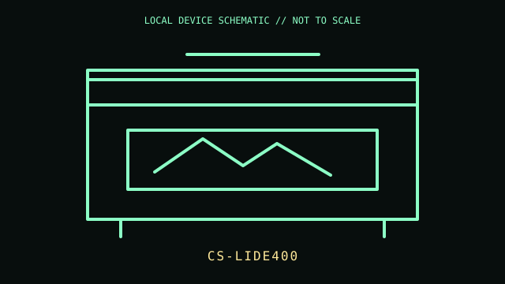

[ IMAGING AND AUDIO-CAPTURE PERIPHERALS // IDENTIFIED COMPONENT ]
Canon CanoScan LiDE 400
Compact flatbed CIS scanner with a hinged lid and upright stand for document and photo acquisition.

MODEL IDENTIFICATION: Manufacturer identity: CanoScan LiDE 400 / CS-LIDE400. Compare the unit label, regional suffix, and revision against the manufacturer's manual before repair or compatibility claims.
Model specifications
| Catalog subcategory | Imaging and audio-capture peripherals |
|---|---|
| Exact model / ID | CanoScan LiDE 400 / CS-LIDE400 |
| Model-specific features | CIS flatbed; maximum optical resolution 4,800 × 4,800 dpi; USB Type-C port supplies data and power; 48-bit input color depth. |
| Interface and host support | USB connection and scanner driver/software support depend on OS version. Advertised interpolated resolution is not optical detail; scan modes and color output settings affect results. |
| Revision / driver caveat | Confirm LiDE 400 rather than visually similar LiDE 300. USB Type-C is the scanner-side connector; use the specified data cable and check Canon’s OS-specific driver availability. |
Preservation and service notes
Do not spray cleaner onto the glass; apply it to a lint-free cloth. Keep the lid hinge and calibration area clean, and lock the carriage only when transporting if the unit provides its lock.
Record the as-found label, accessories, host OS, driver/firmware version, and test method. Separate observed condition from published specifications; do not treat family-level feature claims as proof of a unit's revision.
Primary manufacturer documentation
- Canon CanoScan LiDE 400 specificationsCanon specification listing for CIS, optical resolution, color depth, and USB-powered connection.
- Canon CanoScan LiDE 400 supportManufacturer support page with manuals and operating-system-specific software.
Manufacturer pages may change or retire. Preserve a copy of the applicable manual and note its revision when documenting a physical unit.